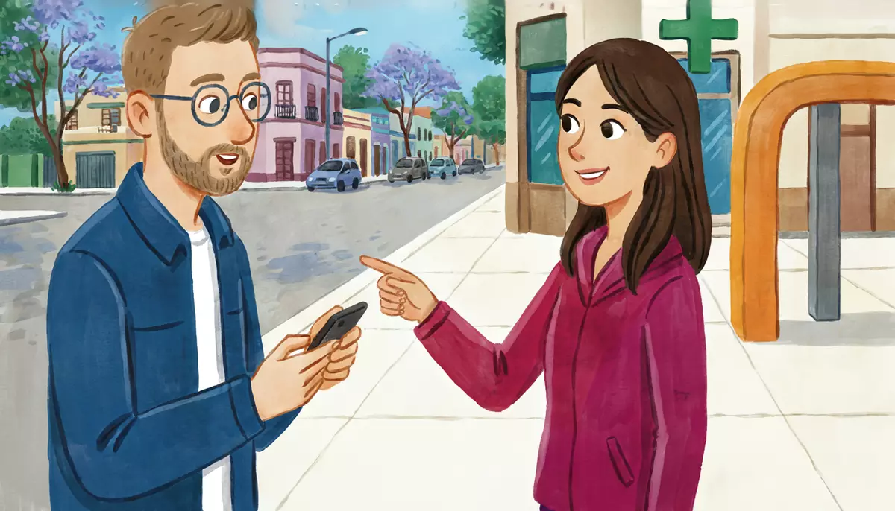

I can ask where something is and understand a simple answer.Goal of this lesson · CEFR Information exchange A1; Understanding an interlocutor A1
Paso 1 de 8
EscuchaListen
Listen to the conversation, then answer the questions.

Saturday morning. Alex needs cash and wants to find the metro station. He asks a woman in the street. usted (Alex and a stranger in the street)
First listen without the text. Press Escuchar todo and answer the first question. Then show the Spanish text and listen again.
ChooseWhat two places is Alex looking for?
Your answer:
A
AlexDisculpe, ¿hay un cajero automático por aquí?Excuse me, is there an ATM around here?
UV
Una vecinaSí, hay uno en el banco de la esquina. Está al lado de la farmacia.Yes, there's one at the bank on the corner. It's next to the pharmacy.
A
Alex¿Al lado de la farmacia? ¿Cuál farmacia?Next to the pharmacy? Which pharmacy?
UV
Una vecinaLa farmacia verde, enfrente del parque. ¿La ve?The green pharmacy, across from the park. Do you see it?
A
Alex¡Ah, sí! Gracias. Y otra pregunta: ¿dónde está la estación del metro?Oh, yes! Thanks. And another question: where's the metro station?
UV
Una vecinaEstá cerca, a tres cuadras, en la avenida. Está entre el mercado y una escuela.It's close, three blocks away, on the avenue. It's between the market and a school.
A
Alex¿Perdón? ¿Me lo repite, por favor? Más despacio.Sorry? Could you repeat that, please? More slowly.
UV
Una vecinaClaro. El metro está a tres cuadras, en la avenida, entre el mercado y la escuela.Of course. The metro is three blocks away, on the avenue, between the market and the school.
A
AlexEntre el mercado y la escuela. ¿Y está lejos del parque?Between the market and the school. And is it far from the park?
UV
Una vecinaNo, no. El parque está enfrente. Todo está muy cerca.No, no. The park is across the street. Everything is very close.
A
AlexMuchas gracias. Muy amable.Thank you very much. You're very kind.
UV
Una vecinaDe nada. ¡Que le vaya bien!You're welcome. Have a good day!
1
ChooseListen again and answer.
Where is the bank with the ATM?
Where is the metro station?
What does Alex do when he doesn't understand?
Paso 2 de 8
FíjateNotice
Read how it works. Play the examples and repeat them aloud.
Where is it? Estar + place
To say where something is, use está (one thing) or están (more than one) + a place phrase. Most place phrases end in de: al lado de (next to), enfrente de (opposite, across from), detrás de (behind), cerca de (near), lejos de (far from). Entre … y … = between. A tres cuadras = three blocks away.
phrase
meaning
al lado de
next to
enfrente de
opposite, across from
detrás de
behind
entre … y …
between … and …
cerca de / lejos de
near / far from
a la derecha de / a la izquierda de
to the right of / to the left of
en la esquina
on the corner
a … cuadras
… blocks away
From the conversation:
Sí, hay uno en el banco de la esquina. Está al lado de la farmacia.Yes, there's one at the bank on the corner. It's next to the pharmacy.
Está cerca, a tres cuadras, en la avenida. Está entre el mercado y una escuela.It's close, three blocks away, on the avenue. It's between the market and a school.
Al and del
Spanish joins two little words: a + el = al and de + el = del. It only happens with el, not with la, los, las: enfrente del parque but al lado de la farmacia.
with el
with la
enfrente del parque
enfrente de la farmacia
al lado del banco
al lado de la escuela
cerca del metro
cerca de la esquina
VoyI'm goingal mercado.
Voy a la tienda.
From the conversation:
La farmacia verde, enfrente del parque. ¿La ve?The green pharmacy, across from the park. Do you see it?
Entre el mercado y la escuela. ¿Y está lejos del parque?Between the market and the school. And is it far from the park?
When you don't understand
You will often not catch everything. These phrases keep the conversation going: ¿Perdón? or ¿Mande? (Sorry?), ¿Me lo repite, por favor? (Can you repeat it? to usted; to tú: ¿Me lo repites?), Más despacio, por favor (more slowly), and repeating the key words to check: ¿Entre el mercado y la escuela?
From the conversation:
¿Perdón? ¿Me lo repite, por favor? Más despacio.Sorry? Could you repeat that, please? More slowly.
Start with Disculpe (excuse me, to usted) when you stop a stranger, and finish with Muchas gracias, muy amable.
Paso 3 de 8
PracticaPractice
Do the exercises in order. They get freer as you go.
1
ChooseNow a different neighborhood, not the street in the dialogue. Look at the map and answer.
The neighborhood map. Arriba (top): the bank, the pharmacy, the park. Abajo (bottom): the market, the metro, the school.
¿Dónde está la farmacia?
¿Qué hay enfrente de la farmacia?
¿Dónde está la escuela?
El mercado está ___ del metro.
2
Type the missing wordsComplete with del, de la, al or a la.
La escuela está enfrente parque.
The school is across from the park.
El banco está al lado farmacia.
The bank is next to the pharmacy.
¿Está lejos metro?
Is it far from the metro?
VoyI'm going mercado.
I'm going to the market.
La tienda está a la derecha escuela.
The shop is to the right of the school.
3
Listen and chooseListen. Where is it?
Where is the café?
Show what they say
Un señor: El café está al lado del parque, en la esquina.
Where is the stationery shop?
Show what they say
Mariana: La papelería está detrás del mercado.
Where is the bus stop?
Show what they say
Diego: La parada del camión está entre el metro y la escuela.
4
Put the words in orderPut the words in order.
Excuse me, where's the bank?
It's next to the pharmacy.
Could you repeat that, please?
5
Say it in SpanishNow you. Say it in Spanish (or type it).
Stop a stranger politely and ask where the metro is.
Disculpe, ¿dónde está el metro?
Ask if there's a pharmacy around here.
¿Hay una farmacia por aquí?
Ask a stranger to repeat it, more slowly.
¿Me lo repite, por favor? Más despacio.
Say: the bank is next to the pharmacy.
El banco está al lado de la farmacia.
Say: the park is across from the school.
El parque está enfrente de la escuela.
6
Your own sentencesYour street.
Write 3–4 sentences about what is near your home and where things are. Use hay and está + place phrases.
Show a model answer
Cerca de mi casa hay un supermercado y un parque. El supermercado está en la esquina, al lado de un banco. El parque está enfrente de mi casa. La estación de tren está a cinco cuadras.
Check your answer:
Paso 4 de 8
PalabrasWords
Listen to each word and repeat it. Then do the quick check.
En la ciudadin town
el bancobank
el cajero automáticoATM
el mercadomarket
la escuelaschool
la estación del metrometro station
la parada del camiónbus stop
la papeleríastationery shop
la avenidaavenue
la callestreet
¿Dónde?where?
al lado denext to
enfrente deopposite, across from
detrás debehind
entrebetween
cerca denear
lejos defar from
a la derechaon the right
a la izquierdaon the left
la esquinacorner
la cuadrablock (of a street)
Frases útilesuseful phrases
disculpeexcuse me (usted)
¿Me lo repite, por favor?Can you repeat that, please? (usted)
Doña LupitaAlex, mijo, ¿me haces un favorcan you do me a favor? Necesito un kilo de tortillas.
Alex¡Claro! ¿Dónde está la tortillería?
Doña LupitaEn la calle Pitágoras, al lado de la papelería, enfrente de la iglesiachurch. Es pequeña, con una puertadoor azul.
Doña LupitaCierrait closes a las tres. ¡Gracias, mijo!
Alex¡Voy! 👍
Words with a dotted underline have a translation: tap or hover.
1
ChooseAnswer the questions about the text.
What does Doña Lupita need?
Where is the tortilla shop?
How can Alex recognize it?
Paso 6 de 8
CulturaCulture
Read about the culture behind the language.
Finding your way: the Metro and ahí nomás
The Mexico City Metro opened in 1969 and today has 12 lines and 195 stations; a trip costs 5 pesos. Every station has its own picture icon as well as a name: a bell for Hidalgo (the bell of Dolores), a grasshopper for Chapultepec (chapulín)… The signage and icon system was designed by Lance Wyman and his team for the opening, partly so that people who could not read could still find their stop. Mexicans still use the icons to give directions.
When people give directions, they use landmarks and blocks (cuadras) more than street names: a dos cuadras, enfrente de la iglesia, donde está el Oxxo (a chain of corner shops). Be careful with ahí nomás or aquí a la vuelta ("just there", "just around the corner"): it can mean two minutes or twenty!
Elsewhere: In Madrid and Buenos Aires the metro is the metro and the subte (subterráneo); a city bus is el autobús in Spain, el colectivo in Argentina and el camión in Mexico.
Sources
Sistema de Transporte Colectivo (Metro CDMX): history, network (12 lines, 195 stations) and fare.
Lance Wyman, design of the Mexico City Metro identity and station icons (1969).
1
ChooseCheck: what did you learn?
Someone tells you the shop is ahí nomás. What does it mean?
Paso 7 de 8
Tu turnoYour turn
Now use it: do the role play, then write.
Role play: Lost in the neighborhood
You are in a Mexico City neighborhood (use the map from the exercises). Stop a person in the street and ask where two places are. Use usted.
You
Stop the person politely (Disculpe…).
Ask if there is an ATM around here.
Ask where the metro station is.
Ask them to repeat something, more slowly.
Repeat the key words to check, thank them and say goodbye.
Un señor en la calle
Answers: the bank is next to the pharmacy.
Explains where the metro is (opposite the pharmacy, next to the market).
Repeats more slowly.
Says you're welcome.
1. Listen to a model
One way the conversation could go. Listen, then try it yourself without looking.
A
AlexDisculpe, ¿hay un cajero automático por aquí?Excuse me, is there an ATM around here?
US
Un señorSí, en el banco. Está al lado de la farmacia.Yes, at the bank. It's next to the pharmacy.
A
AlexGracias. ¿Y dónde está el metro?Thanks. And where's the metro?
US
Un señorEstá enfrente de la farmacia, al lado del mercado, en la avenida.It's across from the pharmacy, next to the market, on the avenue.
A
Alex¿Perdón? ¿Me lo repite, por favor?Sorry? Could you repeat that, please?
US
Un señorEnfrente de la farmacia, al lado del mercado.Across from the pharmacy, next to the market.
A
AlexAl lado del mercado. Muchas gracias, muy amable.Next to the market. Thank you very much, very kind of you.
US
Un señorDe nada, joven.You're welcome, young man.
2. Record yourself
Say your part aloud (pause the model after each of Un señor en la calle's lines), or answer the questions in the role card. Then play it back and compare.
3. Practice with an AI partner (optional)
Copy this prompt into ChatGPT or Claude, switch on voice mode, and have the conversation. It plays Un señor en la calle.
Stuck? Say «ayuda» and it gives you a hint in English, then carries on.
Finished? Say «terminamos» and it gives you feedback in English: what you did well, your mistakes, and useful phrases for next time.
Let's practice Spanish (Mexican Spanish, level A1). You are a friendly older man in a Mexico City neighborhood, about 60. A stranger stops you in the street. Use "usted".
The neighborhood: on one side of the avenue there are a bank, a green pharmacy and a park on the corner; on the other side, a market, the metro station (opposite the pharmacy) and a school (opposite the park). There's an ATM in the bank.
Rules:
- Speak only Spanish, short turns (1-2 sentences), simple language for an A1 learner. Speak slowly and use very common words.
- Answer my questions about where places are, using "está" + al lado de / enfrente de / entre / cerca de. Speak naturally but simply. If I ask you to repeat, repeat more slowly with fewer words.
- You play only this one person. Never speak as anyone else, and don't describe what other people say or do.
- If I make a mistake, don't stop me: repeat what I said correctly in your answer (for example: if I say "¿Dónde hay el metro?", you say "¿El metro? Está enfrente de la farmacia.").
- The first time you explain where the metro is, say it a bit fast, so I have to ask you to repeat it.
- When I say "ayuda", step out of the role play for a moment: in English, give me a short hint about what I could say next, with one or two short Spanish options, then continue the role play where we were.
- When I say "terminamos", stop the role play and give me feedback in English: 3 things I did well, up to 3 mistakes with corrections, and 3 useful phrases for next time.
Start now: wait for me to stop you; if I don't speak first, say "¿Sí? ¿Le puedo ayudar?"
Writing: Directions to your home
A friend is coming to visit. Write a message explaining where your home is: which station or stop is nearest, and landmarks near your building.
30–60 words.
Show a model answer
¡Hola, Mariana! Mi casa está en la calle Pitágoras, número setenta y cuatro. Está cerca del metro Etiopía, a cuatro cuadras. Mi casa es rosa y está al lado de un banco, enfrente de un parque. ¡Nos vemos el sábadoon Saturday!
Check your text:
Paso 8 de 8
¿Lo logré?Did I do it?
Check yourself against the goal of the lesson.
Read each statement and be honest: anything marked casi or todavía no goes into Repaso so it comes back soon.
I can ask where something is and if there is one nearby.
I can understand a simple answer with al lado de, enfrente de, entre…